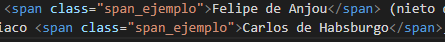
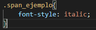
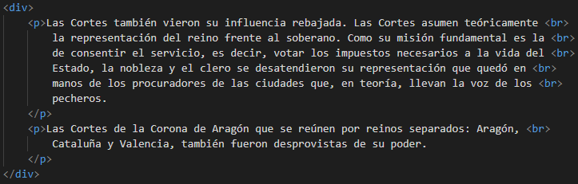
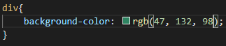
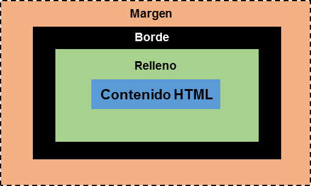
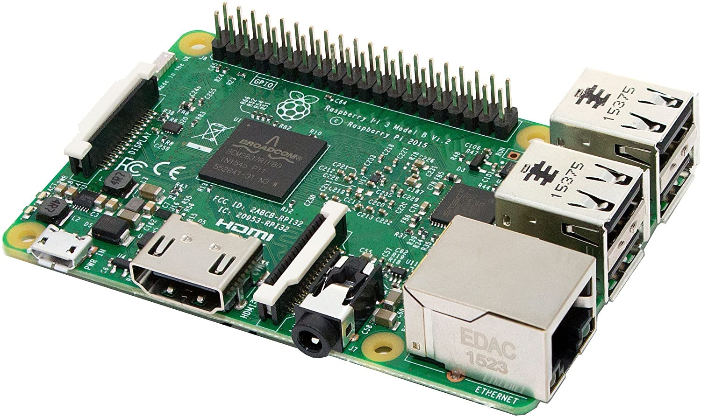

Hay dos maneras de agrupar los elementos en css: en línea o en bloques.
Para agrupar los elementos en línea empleamos el comano span y
y para agrupar los elementos en bloques usamos el comando div.
Ejemplos del uso de span:
La falta de descendencia directa a la muerte de Carlos II provocó un conflicto
entre las potencias partidarias de Felipe de Anjou (nieto de Luis XIV de
Francia) y las del candidato austriaco Carlos de Habsburgo, temerosas de una
poderosa alianza franco-española.


Ejemplo del uso de div:


Las Cortes también vieron su influencia rebajada. Las Cortes asumen teóricamente
la representación del reino frente al soberano. Como su misión fundamental es la
de consentir el servicio, es decir, votar los impuestos necesarios a la vida del
Estado, la nobleza y el clero se desatendieron su representación que quedó en
manos de los procuradores de las ciudades que, en teoría, llevan la voz de los
pecheros.
Las Cortes de la Corona de Aragón que se reúnen por reinos separados: Aragón,
Cataluña y Valencia, también fueron desprovistas de su poder.
Empleamos este comando le usamos cuando al haber modificado la anchura y altura de un atributo,
queremos que quede dentro del espacio. Ejemplo:
La crisis demográfica afectó de muy diversa manera al extenso territorio
de la Corona de Castilla. Se dejó sentir menos en Galicia, Asturias y País
Vasco, y mucho más en los territorios recién conquistados y más
densamente poblados: Valles del Guadiana y Guadalquivir, así como los
territorios castellanos de la costa mediterránea. Se calcula un descenso de
población de un 25 %, aunque la recuperación demográfica hizo que
Castilla entrara en un proceso expansionista que sentó una de las bases de
su potencial en el inicio de la Edad Moderna.
El modelo de caja consiste en emplear los comandos de estilo margin,
border y pading para tenerlo a tu gusto. Ejemplo:

Margin es el espacio que hay entre la pared de la página, otro contenido cualquiera y
el borde del contenido.
Border es la separación entre el espacio de la página y el contenido.
Padding es el relleno en el interior de los bordes, es decir,
el espacio entre los bordes y el texto.
 La Raspberry Pi es una serie de ordenadores de placa reducida, ordenadores de placa única u ordenadores de placa simple de bajo coste desarrollado en el Reino Unido por la Raspberry Pi Foundation, con el objetivo de poner en manos de las personas de todo el mundo el poder de la informática y la creación digital.
El posicionamiento sirve para colocar los objetos de la página.
Un elemento con posición relativa está posicionado en relación con su posición normal.
Ejemplo:
La organización detrás de la Raspberry Pi consiste en dos brazos. Los primeros modelos fueron desarrollados por la Raspberry Pi Foundation.
Después de que la Raspberry Pi 1 Modelo B fuese lanzado, la fundación creó Raspberry Pi Trading, con Eben Upton como CEO, para desarrollar
el tercer modelo, el Raspberry Pi Modelo 1 B+.
Raspberry Pi Trading es responsable de desarrollar la tecnología, mientras que la fundación es una caridad educativa que
tiene como objetivo promocionar la enseñanza de informática en escuelas y países en desarrollo.
Un elemento con posición absoluta está posicionado en relación con el antecesor posicionado más cercano. Ejemplo:
En el 2006, los primeros diseños de Raspberry Pi se basaban en el microcontrolador Atmel ATmega644.
Sus esquemas y el diseño del circuito impreso están disponibles para su descarga pública.
En mayo de 2009, la fundación Raspberry Pi fue fundada en Caldecote, South Cambridgeshire, Reino Unido
como una asociación caritativa que es regulada por la comisión de caridad de Inglaterra y Gales.
Un elemento con posición fija está posicionado en relación con la ventana gráfica,
lo que significa que siempre permanece en el mismo lugar incluso si se desplaza la página.
Ejemplo:
El comando z-index se emplea para superponer objetos, es decir, poner objetos encima o debajo de otros.
Esto se ve mejor en un ejemplo con imágenes.

La propiedad float, como su propio nombre indica, sirve para hacer flotar un objeto,
ya sea a la izquierda o a la derecha. Ejemplo:

Este fue el primer modelo de Raspberry, sus ventas comenzaron en el año 2012. Carecía de puerto Ethernet, por lo que para su conexión a Internet requería de un adaptador Wi-Fi por USB. Poseía 26 conectores GPIO, salida de vídeo via HDMI y Video RCA, un conector Jack de 3.5 milímetros, un único conector USB, MicroUSB (De alimentación) y un conector de cámara.
La propiedad clear sirve para especificar qué elementos pueden flotar junto al elemento
con el comando clear. Ejemplo:
En agosto de 2011, se fabricaron placas alfa, con las mismas características que el modelo B, pero eran un poco más grandes para integrar bien unas interfaces para depuración. En algunas demostraciones se podía ver la placa ejecutando el escritorio LXDE en Debian. En octubre del mismo año, el logotipo se selecionó entre varios diseños por miembros de la comunidad.
La placa alfa, cuya foto es la izquierda, presenta una construcción diferente de las posteriores placas beta y finales.